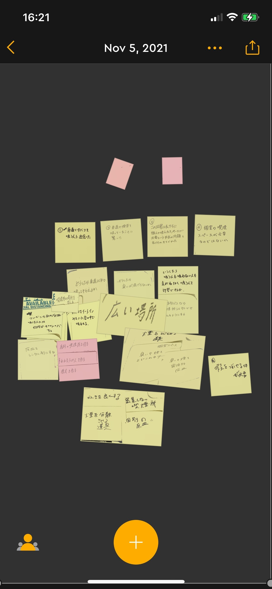
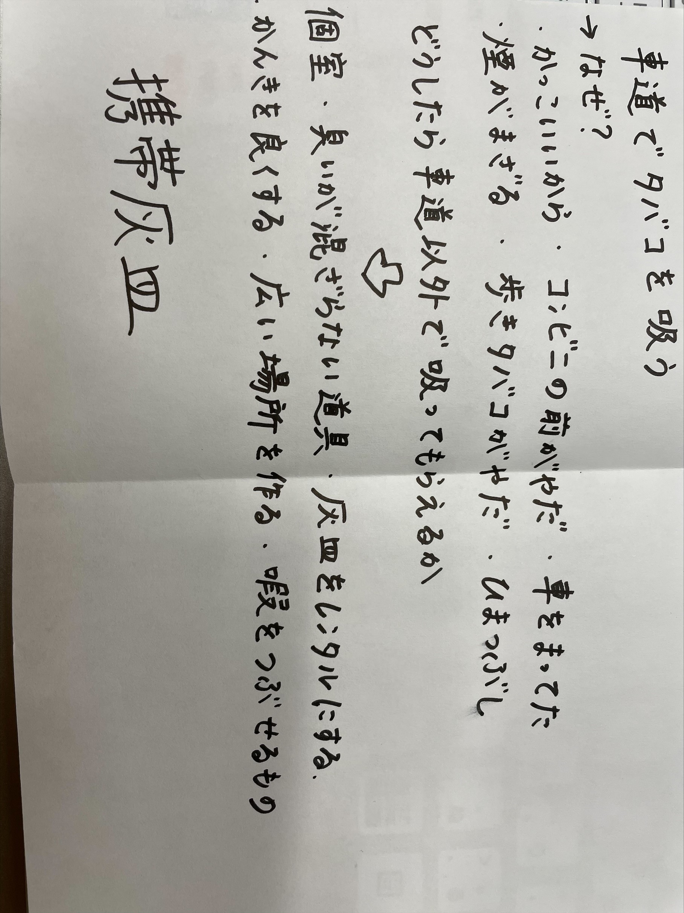
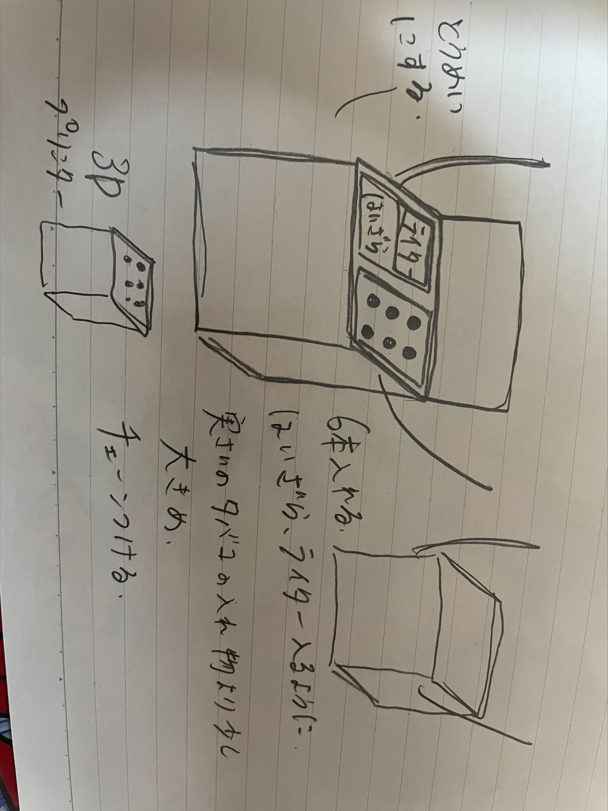
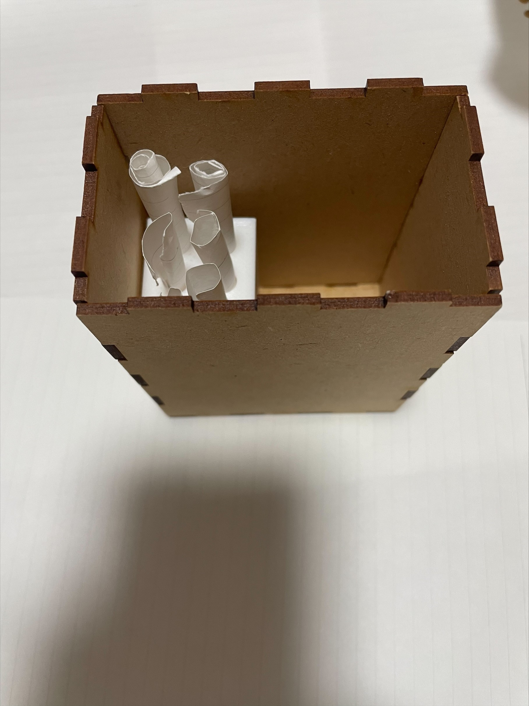

<h1>プロトタイピング･ドキュメンテーション</h1>

<h2>グループでピックアップ</h2>
2班　対象：車道でたばこを吸っていた人

<div>POV･HOW</div>


近くに灰皿などのたばこの吸い殻を捨てるものがなく、捨てる場所がないと考えた。
　
<h2>スケッチ</h2>

<h2>プロトタイピングしたもの</h2>

<div>元々たばこを買った際に吸い殻入れがあるものがよいと考えた</div>